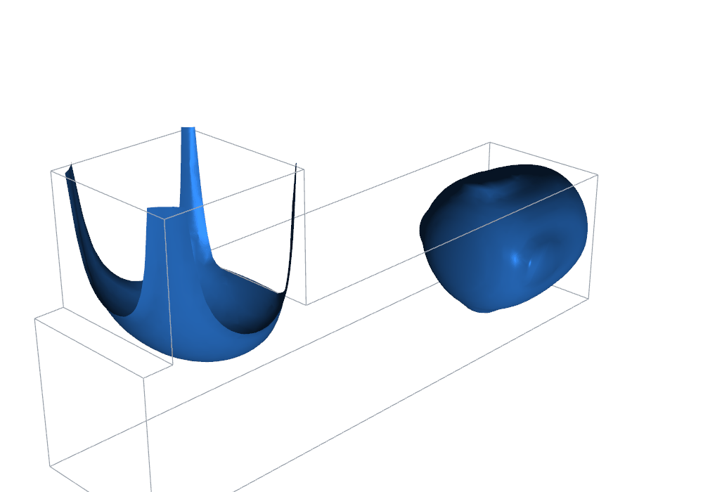

— ms
Loading field…

3D water isosurface — the phase necks at the junction and a droplet
pinches off into the oil-filled main channel. interFoam (VOF),
800 µm milled-chip geometry, operating point derived from measured 2D
fluxes (q = 0.29, Ca = 0.032).
This is a pre-rendered loop. An interactive orbitable isosurface
drops in here once a nightly 3D run is exported with
export_web.py (see the viewer README) — the 3D field data is
multi-gigabyte and lives outside the repo.
Velocity-driven sweep · results/sweep_2026-07.